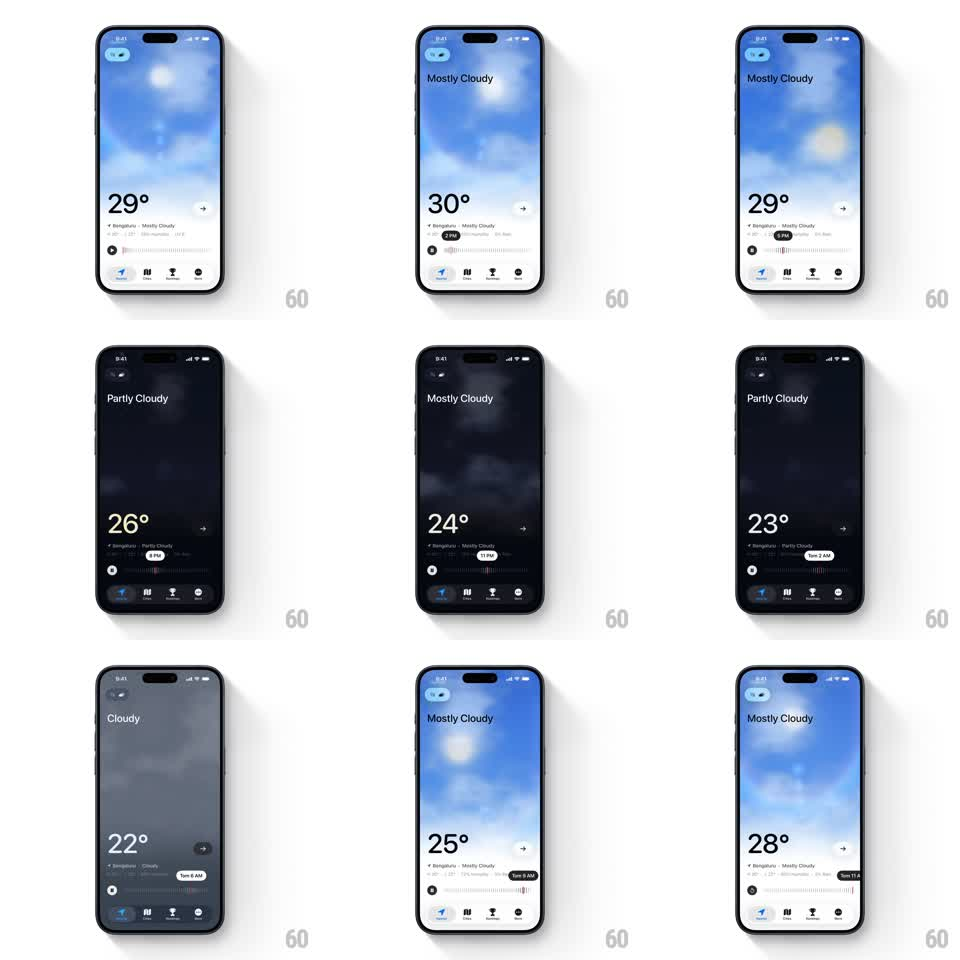

Media
Frame-by-frame

Rebuild this interaction 1:1: Good Air's time scrubber - dragging the hourly timeline strip scrubs the whole sky between day and night, crossfading sun and moon, shifting the background lighting, and counting the temperature and condition label to match each hour.

Rebuild this interaction 1:1: Good Air's time scrubber - dragging the hourly timeline strip scrubs the whole sky between day and night, crossfading sun and moon, shifting the background lighting, and counting the temperature and condition label to match each hour.
## Integration
Integration: stack-agnostic spec - springs given as stiffness/damping, timed motions as duration + curve; map every value to your framework and animation library of choice.
## Scene
Weather home: fullscreen sky photo/gradient (day blue with sun, night near-black with moon), condition label top-left ("Mostly Cloudy"), huge temperature mid-left, and a bottom hourly timeline strip with tick marks, a "Now" pill, and hour labels. Bottom tab bar stays fixed.
## Motion spec
Pattern: time scrubber driving a continuous day-night scene transition.
- The timeline tracks the finger 1:1 horizontally; the selected hour snaps to ticks on release (spring ~320/26, 250ms).
- Sky lighting interpolates continuously with scrub position: sun arcs down as the moon rises (both on an arc path, opacity crossfade around dusk/dawn), background hue shifts blue -> indigo -> black and back.
- Temperature counts between hourly values (whole-degree steps, ~80ms per step) while the condition label crossfades when its value changes (150ms).
- The selected hour pill ("9 PM", "1 AM") highlights filled; "Now" pill is the default anchor the strip returns to on double-tap.
## Calibration
- The transition is seamless - no cuts; every pixel of the sky is a function of scrub position.
- Temperature lags the finger slightly (~100ms) so numbers roll rather than snap.
## Reduced motion
Sky crossfades between day/night presets (300ms) instead of continuous interpolation; temperature jumps to final value.
## Don't miss
- Sun and moon share one arc path in the same sky region.
- The condition label sits over the sky and stays readable in both day and night palettes.